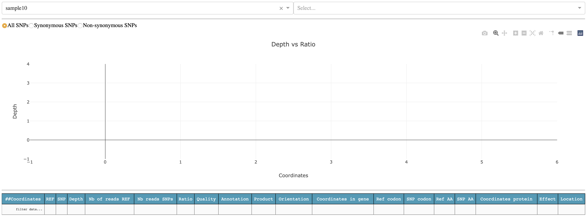
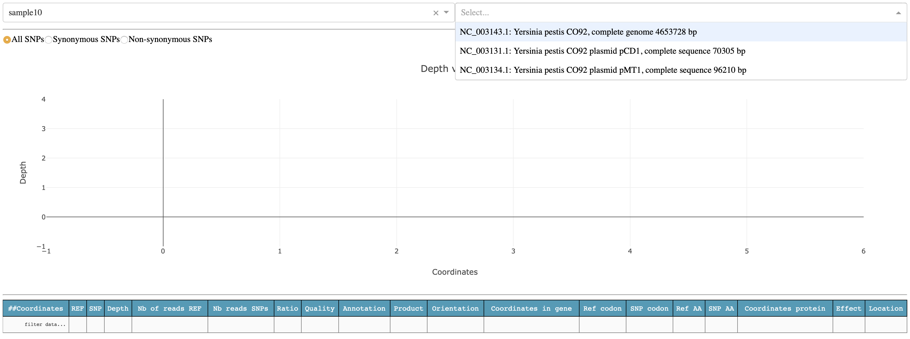
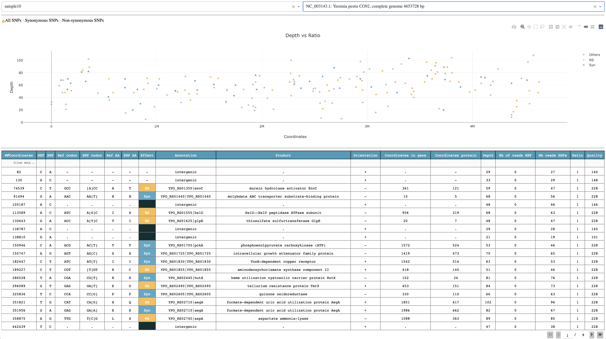

5. The viz command¶
$ snptoolkit viz -h
usage: snptoolkit viz [-h] [--dir DIRECTORY] [-p POLYMORPHIC_SITES] [-conf CONFIG]
optional arguments:
-h, --help show this help message and exit
snpToolkit viz required options:
--dir DIRECTORY provide the path of the directory containing snptoolkit SNPs output files
-p POLYMORPHIC_SITES provide the path of the polymorphic sites you want to analyze
-conf CONFIG provide the path of the configuration file that contains the information to use for data visualization
5.1. Visualize snptoolkit annotate command output files¶
── snpToolkit_SNPs_output_...
├── sample3_snpToolkit_SNPs.txt
├── sample9_snpToolkit_SNPs.txt
├── sample10_snpToolkit_SNPs.txt
├── sample1_snpToolkit_SNPs.txt
├── sample2_snpToolkit_SNPs.txt
├── sample4_snpToolkit_SNPs.txt
├── sample5_snpToolkit_SNPs.txt
├── sample6_snpToolkit_SNPs.txt
├── sample7_snpToolkit_SNPs.txt
└── sample8_snpToolkit_SNPs.txt
$ snptoolkit viz --dir snpToolkit_SNPs_output_..
Dash is running on http://127.0.0.1:8050/
* Serving Flask app "plot_snpToolkit_output" (lazy loading)
* Environment: production
* Debug mode: off
* Running on http://127.0.0.1:8050/ (Press CTRL+C to quit)
To visualize all snpToolkit outputs, just access the url http://127.0.0.1:8050/.
{kind=link}
The first time, you will see one sample selected, in this case sample10, and nothing in the plot and table below. Before to see anything you will need to select for which sequence you want to display the result. For sample10, SNPs where found in the chromosome of Yersinis pestis NC_003143.1 and two plasmids: NC_003131.1 and NC_003134.1
{kind=link}
lets select the chromosome NC_003143.1
{kind=link}
The plot shows the genomic distribution of all SNPs according to depth. By default, all SNPs are shown but you can select to visualize only Non-synonymous (orange), Synonymous (blue) and intergenic SNPs (grey). The table below the plot shows all relevant information retrieved from snptoolkit output file for each sample.
It is possible to filter the table using keywords on each column. In the example below, I used the keyword “transporter” in the column Product.